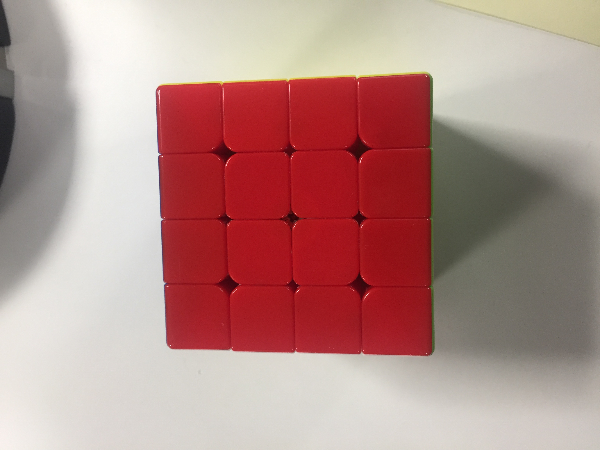

<!-- <!doctype HTML>
<html>
<script src="https://aframe.io/releases/0.8.2/aframe.min.js"></script>
<script src="https://cdn.rawgit.com/jeromeetienne/AR.js/1.6.2/aframe/build/aframe-ar.js"></script>

  <body style='margin : 0px; overflow: hidden;'>
    <a-scene embedded arjs>
  	<!-- <a-marker preset="hiro"> -->
        <a-marker type="pattern" patternUrl='https://bmoishe.github.io/AR/Vodafone-pattern-marker.patt'>
<!--           <a-marker type="pattern" patternUrl='test-pattern-marker.patt'> -->
      <!-- can change a-box to another asset that I want to display eg and image using a-image <a-image src="#my-image"></a-image> for example -->
            <a-box position='0 0.5 0' material='color: black;'></a-box>
  	</a-marker>
      
          <a-marker preset='hiro'>
      <a-box position='0 0.5 0' material='color: green;'></a-box>
    </a-marker>
  	<a-entity camera></a-entity>
    </a-scene>
  </body>
</html>
 -->
<!doctype HTML>
<html>
<script src="https://aframe.io/releases/0.8.2/aframe.min.js"></script>
<script src="https://cdn.rawgit.com/jeromeetienne/AR.js/1.6.2/aframe/build/aframe-ar.js"></script>

      <body style="margin: -606.5px 0px 0px; overflow: hidden; width: 2560px; height: 1920px;" class="">

        
        <a-scene embedded="" arjs="trackingMethod: best;" class="" canvas="" inspector="" keyboard-shortcuts="" screenshot="" vr-mode-ui="">
  
          
           <a-assets>
    
  </a-assets>
      
            <!-- Create a anchor to attach your augmented reality -->
            <a-anchor hit-testing-enabled="true" position="" rotation="" scale="" visible="" material="" arjs-anchor="" arjs-hit-testing="">
        
              <!-- Add your augmented reality here -->
<!--               <a-box position="0 0.5 0" material="opacity: 0.5; side:double; color:red;" rotation="" scale="" visible="" geometry="">
                <a-torus-knot radius="0.26" radius-tubular="0.05" position="" rotation="" scale="" visible="" material="" geometry="">
                  <a-animation attribute="rotation" to="360 0 0" dur="5000" easing="linear" repeat="indefinite"></a-animation>
                </a-torus-knot>
              </a-box> -->
              <a-image src="#red" position='0 0.5 0' material='color: black;'></a-box>
        
            </a-anchor>
        
            <!-- Define a static camera -->

<a-camera-static position="" rotation="" scale="" visible="" material="" camera="">
        
          </a-camera-static>
  </body>
</html>
